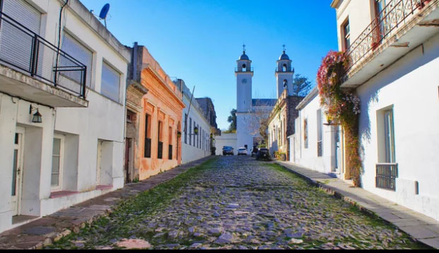
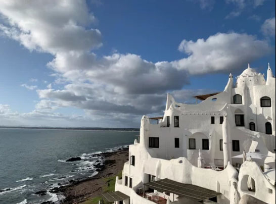
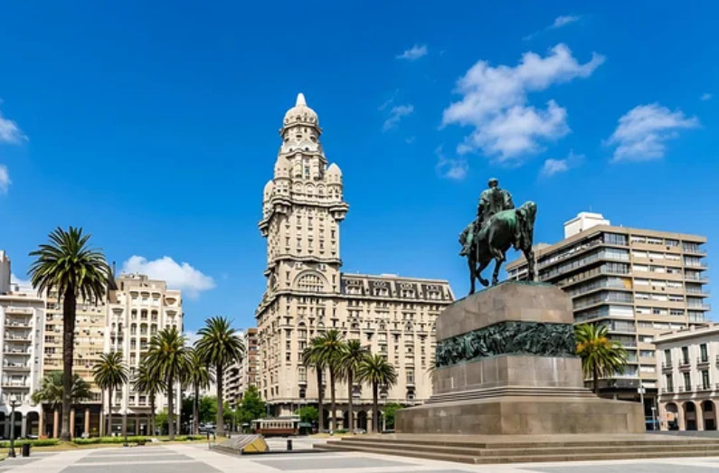
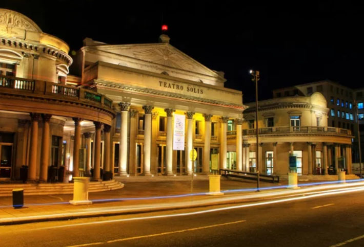
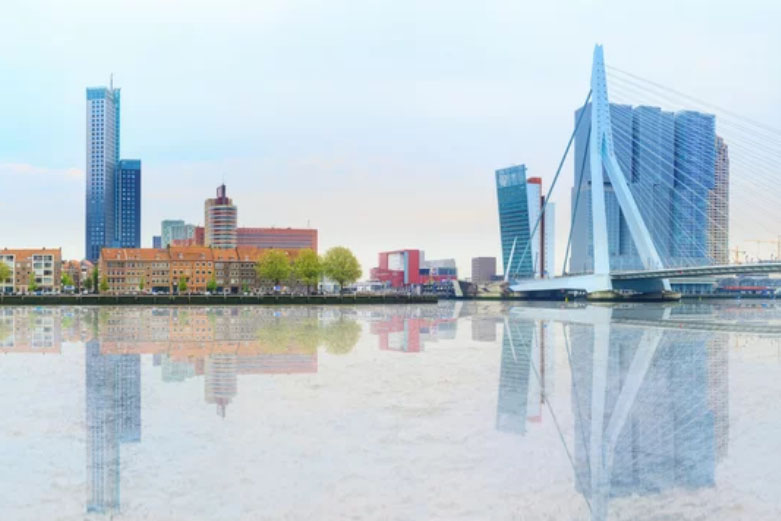
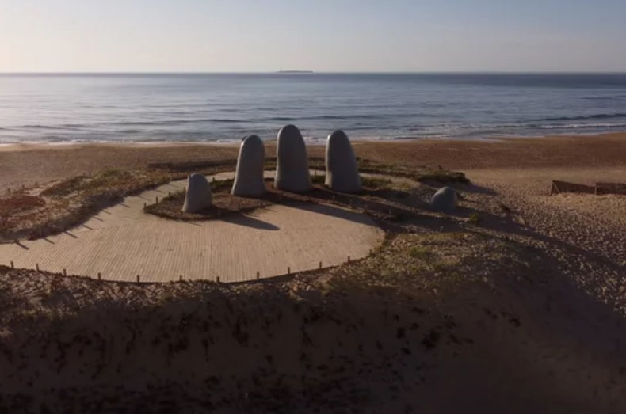
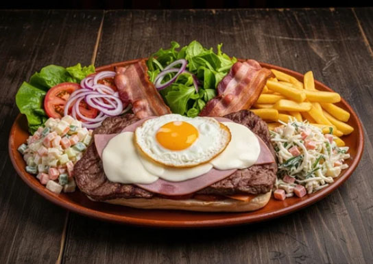
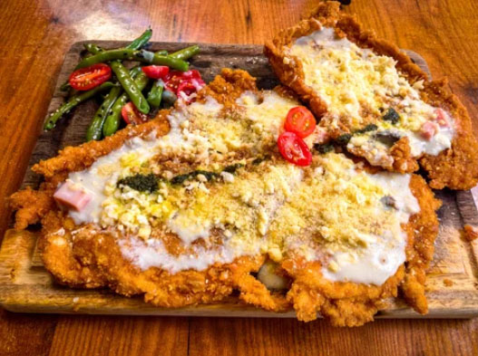

Uruguay, South America's hidden gem
Discover the Magic of Uruguay
From historic streets to beautiful coastlines, let us guide you on an unforgettable journey through
Architectural Marvels. Coastal Sanctuaries.
Iconic Landmarks
Discover Uruguay’s extraordinary landscapes shaped by culture, history, and tranquil wonder.

Casapueblo
Sculpted by hand over decades, this sprawling white citadel cascades down the cliffs of Punta Ballena. A surreal masterpiece of curves, light, and ocean views where architecture merges beautifully with the setting sun.

Palacio Salvo
Rising like a nostalgic dream above Montevideo, this historic skyscraper is a striking blend of Art Deco and eccentric Gothic architecture. A towering masterpiece that anchors the city's identity and echoes the grand stories of a bygone era.

Teatro Solís
Located right by Palacio Salvo on Independence Square, this prestigious grand theater opened its doors in 1856. It beautifully captures a sense of European elegance and timeless classical beauty.
Cities of Relaxed Charm
Cities of Distinction
From the tranquil waterfront and rich culture of the capital to glamorous resort shores and timeless colonial streets, Uruguay's cities offer a perfect blend of history, modern life, and easy-going harmony.

Colonia del Sacramento
A beautiful historic district frozen in time, featuring cobblestone streets and colonial architecture.

Montevideo
Home to nearly half of the nation's population, this scenic port city is celebrated as one of the safest and most beautiful in South America.

Punta del Este
Home to the iconic "La Mano" hand sculpture, this premier beach resort city is often called the "Monaco of South America" or the "Miami of South America"—a playground for celebrities and one of the most exclusive coastal destinations on the continent.
The Heart of Rio de la Plata
Deeply rooted in European flavors and livestock traditions, we invite you to savor the rich culinary heritage of Uruguay—where every dish tells a story of passion, tradition, and timeless warmth.

Chivito al plato
A style where all the ingredients are stacked high on a plate and eaten with a knife and fork.

Milanesa
A South American-style cutlet made with beef or chicken that is pounded thin, coated in breadcrumbs, and fried to perfection.
Canoncitos
Flaky pastry, rich caramel milk jam, and a touch of powdered sugar.
ウルグアイ東方共和国の歴史
Oriental Republic of Uruguay
Its history is characterized by a unique path of development: starting from the indigenous era, the country served as a stage for hegemony struggles between its neighbors, Brazil (Portuguese territory) and Argentina (Spanish territory), before gaining independence and later becoming known as the "welfare state of South America."
古代・先植民地期
チャルーア族の時代（～16世紀）
狩猟民族であるチャルーア族などの先住民族が、豊かな草原地帯で独自の生活を営む。
植民地時代（近世）
スペイン人の到達（1516年）
フアン・ディアス・デ・ソリスがラプラタ川東岸（現在のウルグアイ）に到達するも、先住民族の激しい抵抗に遭う。
ポルトガルとの覇権争い（1680年～）
ポルトガルが対岸のブエノスアイレスを牽制するためコロニア・デル・サクラメントを建設。これに対抗しスペインは1726年にモンテビデオを建設し、両国の激しい争奪戦が展開。
近代（独立と国家形成）
東方州の誕生（1811年～）
建国の父（独立の父）ホセ・ヘルバシオ・アルティガスがスペイン軍を破り、独自の自治（東方州）を目指し蜂起。
ブラジル領への編入（1821年）
ポルトガル（のちにブラジル帝国）に占領され、「シスプラチナ州」として編入される。
「33人の東方人」と独立（1825年～1828年）
ラバジェハ率いる「33人の東方人」がブラジルからの解放を叫び蜂起。アルゼンチン・ブラジル間の戦争を経て、イギリスの仲介により1828年に独立が確定（1830年憲法制定）。
大戦争（1839年～1851年）
保守派（ブランコ党）と自由派（コロラド党）の内戦が勃発。英仏やアルゼンチンも介入する長期の動乱期へ。
近現代（繁栄と動乱）
「南米の福祉国家」の黄金期（20世紀初頭）
ホセ・バジェ・イ・オルドニェス大統領（バジェ大統領）のもとで、死刑廃止、労働時間制限、女性参政権などの先進的な社会福祉制度を確立。農牧業の輸出で世界有数の富裕国に。
第1回W杯の開催と優勝（1930年）
独立100周年を記念し、首都モンテビデオで第1回サッカーW杯を開催。ウルグアイが初代王者に輝く。
経済停滞と軍事独裁（1960年代～1985年）
経済の悪化に伴い左ゲリラ「ツパマロス」が台頭。1973年に軍部が実権を握り、厳しい独裁政権が続く。
現代
民政移管と安定（1985年～現在）
民主主義へ復帰。2005年には史上初の左派政権（拡大戦線（FA））が誕生。ムヒカ大統領（「世界で一番貧しい大統領」として知られる）のもとで進歩的な政策が進み、現在は南米で最も政治・経済が安定した国の一つ。
コロニア・デル・サクラメントとモンテビデオ
ウルグアイの首都モンテビデオが誕生した背景には、当時の2大超大国（ポルトガルとスペイン）による激しい「陣取り合戦」がありました。 歴史のパズルが綺麗に繋がる、非常に重要なポイントです。この攻防は以下のような流れで進みました。
1. ポルトガルの奇襲：コロニア・デル・サクラメント（1680年）
ポルトガルは、スペインの拠点だったブエノスアイレスの「真向かい」（ラプラタ川を挟んだ対岸）に、突如コロニア・デル・サクラメントという要塞都市を築きました。
目的: スペイン領への密輸の拠点にすること、そして南米での領土を南へ広げることです。
結果: スペインにとっては、喉元にナイフを突きつけられたような凄まじい脅威でした。
2. スペインの反撃：モンテビデオの建設（1726年）
ポルトガルの勢力がこれ以上ラプラタ川の東岸（今のウルグアイ）に広がるのを防ぐため、スペインが満を持して建設したのがモンテビデオです。
目的: ポルトガルに対する防衛拠点（砦）の構築、および天然の良港を確保して制海権を握ることです。
結果:これによって、ウルグアイ川の東岸地域（バンダ・オリエンタル）は、両国の激しい覇権争いの最前線（舞台）となりました。
3. 現在の世界遺産
ポルトガルが建てたコロニア・デル・サクラメントは、今ではウルグアイ最古の街として世界遺産に登録されています。ポルトガル風の石畳や街並みが残る美しい観光地です。
「隣国であるブラジル（ポルトガル領）とアルゼンチン（スペイン領）の覇権争いの舞台を経て独立し…」という歴史は、まさにこの1720年代のモンテビデオ建設から始まっていたのです。
ウルグアイの文化を紐解くと、驚くほど「南米の中のヨーロッパ」という色彩が強く出ています。
他国の争いの歴史が引き金となり、その後に大量の移民が押し寄せた結果、ウルグアイの文化は先住民族の要素がほとんど残らず、ほぼ100%ヨーロッパ起源の文化で再構成されることになりました。
ウルグアイの文化から「ヨーロッパ」が強く感じられるのには、具体的に以下のような理由があります。
1. 人口のほとんどがヨーロッパ系移民
19世紀後半から20世紀前半にかけて、イタリアやスペインを中心に、ドイツ、フランスなどから大量の移民がウルグアイに渡ってきました。現在のウルグアイ国民の約9割がヨーロッパにルーツを持っています。そのため、街並み、人々の顔立ち、食文化、生活習慣のベースがヨーロッパそのものになりました。
2. パリをモデルにした街並みとカフェ文化
首都モンテビデオの古い街並み（旧市街）を歩くと、まるでヨーロッパの古都にいるような錯覚を覚えます。特に20世紀初頭の繁栄期にはフランスの建築様式が好んで取り入れられ、「南米のパリ」を目指して街がデザインされました。人々がカフェに集まり、政治や芸術について語り合う文化も、ヨーロッパからそのまま持ち込まれたものです。
3. サッカーという「共通言語」の定着
イギリス人によってもたらされたサッカー（Football）は、ウルグアイの文化の核となりました。1930年の第1回ワールドカップでウルグアイが優勝できたのも、ヨーロッパ最先端のスポーツ文化をいち早く吸収し、国を挙げて発展させたからでした。
4. 南米で最も「宗教色（カトリック）」が薄い国
南米の国々は一般的にカトリックの信仰が非常に強いですが、ウルグアイは例外的に政治と宗教が完全に分離（政教分離）されています。これは20世紀初頭にフランスなどの先進的な思想（世俗主義）を取り入れたためです。クリスマスを「家族の日」、イースターを「観光ウィーク」と法律で改名してしまうほど、ヨーロッパの近代合理主義的な思想が深く根づいています。
南米といえば、ブラジルやコロンビアのように「先住民、アフリカ系、ヨーロッパ系の多様な混血文化（マルチ・エスニック）」をイメージしがちです。 しかし、ウルグアイとアルゼンチンの2国に関しては、19世紀後半に当時の人口を遥かに超える数百万人規模のイタリア・スペイン移民が押し寄せたため、先住民の文化や血統がほぼ完全にヨーロッパ系に塗り替えられました。
「世界一貧しい大統領」として知られるホセ・ムヒカ（José Mujica）氏は、2010年から2015年までウルグアイの第40代大統領を務めた政治家です。
彼がそのように呼ばれ、世界中で愛された理由は、単に「お金を持っていなかったから」ではなく、「豊かな国の大統領でありながら、物欲を排した独自の哲学を貫き通したから」です。
1. なぜ「世界一貧しい」と言われたのか？
大統領在任中、彼は国家元首としての特権をほぼすべて放棄しました。
・給与の9割を寄付：毎月の大統領の給与（約120万〜130万円相当）の約90%を、貧困層向けの住宅支援などのために寄付し、自身の手元には平均的なウルグアイ人の初任給ほど（約10万円）しか残しませんでした。
・大統領公邸を拒否：豪華な大統領公邸に住むのを拒み、首都郊外にある妻（ルシア・トポランスキー氏、元副大統領）の質素な農場に住み続けました。水道は井戸から引き、花を栽培して生活していました。
・愛車は古いビートル：お抱えの高級リムジンではなく、1987年製のフォルクスワーゲン・ビートル（型式：フスカ）を自ら運転して公務に向かうこともありました。
2. 世界を揺るがした「リオ会議でのスピーチ」（2012年）
彼の名が世界中に知れ渡ったきっかけは、2012年にブラジルで開催された国連の「地球サミット（リオ＋20）」でのスピーチです。環境問題を話し合う場で、彼は現代の大量消費社会の根源を厳しく批判しました。
「私たちは発展するために生まれてきたのではありません。幸せになるために生まれてきたのです」「貧乏な人とは、少ししか物を持っていない人のことではなく、無限に欲しがり、いくらあっても満足しない人のことです」
このスピーチは「人類の幸福とは何か」を問い直すものとして、世界中で大きな感動を呼び、絵本や書籍にもなりました。
大統領を退任した後も、彼は拡大戦線（FA）の精神的支柱としてウルグアイ政治に大きな影響を与え続けました。2024年の大統領選挙でも、自身の後継者であるヤマンドゥ・オルシ氏（2025年就任）の応援演説に車椅子で駆けつけ、左派政権の奪還に大きく貢献しています。
彼は自分のことを「貧しい」と言われるたびに、こう反論しています。「私は貧乏ではない。シンプルに生きているだけだ。持ち物を少なくすれば、それを維持するための労働に時間を奪われず、自分の好きなことに使える自由な時間が増える。それこそが最大の贅沢だ」